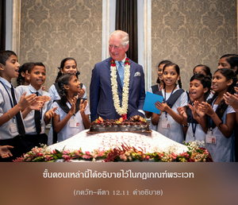

อย่างไรก็ดี หากไม่สามารถทำงานในจิตสำนึกแห่งข้านี้ได้ ก็พยายามเสียสละผลงานของเธอทั้งหมด และพยายามตั้งมั่นอยู่ในตนเอง

อาจเป็นไปได้ที่เราไม่สามารถแม้แต่จะเห็นอกเห็นใจกับกิจกรรมต่างๆ ในกฺฤษฺณจิตสำนึก อันเนื่องมาจากข้อพิจารณาทางสังคม ทางครอบครัว หรือทางศาสนา หรือเนื่องมาจากอุปสรรคอื่นๆ หากเรายึดมั่นกับกิจกรรมในกฺฤษฺณจิตสำนึกโดยตรง อาจมีการคัดค้านจากสมาชิกในครอบครัว หรือมีความยุ่งยากอื่นๆ มากมาย สำหรับผู้ที่มีปัญหาเช่นนี้ได้แนะนำไว้ว่า เขาควรสละผลแห่งกิจกรรมที่สะสมมาเพื่อทำคุณประโยชน์บางประการ ขั้นตอนเหล่านี้ได้อธิบายไว้ในกฎเกณฑ์พระเวท ซึ่งอธิบายไว้มากมายเกี่ยวกับการเสียสละ และพิธีกรรมพิเศษเพื่อผลบุญ (ปุณฺย) หรืองานพิเศษ ซึ่งผลกรรมในอดีตของเขาอาจใช้ได้เพื่ออาจค่อยๆ พัฒนามาถึงระดับแห่งความรู้ ยังพบอีกว่าเมื่อไม่สนใจแม้ในกิจกรรมของกฺฤษฺณจิตสำนึก การให้ทานกับโรงพยาบาล หรือสถาบันเพื่อสังคมบางแห่งจะทำให้เขาสละผลงานที่ได้มาด้วยความเหนื่อยยากซึ่งแนะนำไว้ ณ ที่นี้ เพราะเมื่อฝึกปฏิบัติการเสียสละผลจากกิจกรรมของตนเองจิตใจจะค่อยๆ บริสุทธิ์ขึ้นอย่างแน่นอน ในระดับจิตที่บริสุทธิ์นั้นเขาจะสามารถเข้าใจกฺฤษฺณจิตสำนึก แน่นอนว่ากฺฤษฺณจิตสำนึกไม่ขึ้นอยู่กับประสบการณ์ใดๆ ทั้งสิ้น เพราะว่าในตัวของกฺฤษฺณจิตสำนึกเองสามารถทำให้จิตบริสุทธิ์ แต่หากมีอุปสรรคในการรับเอากฺฤษฺณจิตสำนึกมาปฏิบัติ เขาอาจพยายามเสียสละผลของงาน ในกรณีนี้การรับใช้สังคม รับใช้ชุมชน รับใช้ประเทศชาติ การเสียสละเพื่อประเทศของตนเองอาจยอมรับได้ เพื่อวันหนึ่งอาจมาถึงระดับแห่งการอุทิศตนเสียสละรับใช้แด่องค์ภควานฺด้วยใจบริสุทธิ์ ใน ภควัท-คีตา (18.46) เราพบข้อความว่า ยตห์ ปฺรวฺฤตฺติรฺ ภูตานามฺ หากตัดสินใจเสียสละเพื่อแหล่งกำเนิดสูงสุด ถึงแม้ไม่รู้ว่าแหล่งกำเนิดสูงสุดคือองค์กฺฤษฺณ เขาจะค่อยๆ เข้าใจว่าองค์กฺฤษฺณ คือ แหล่งกำเนิดสูงสุด ด้วยวิธีการเสียสละ